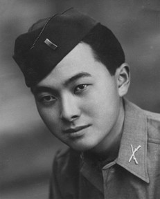
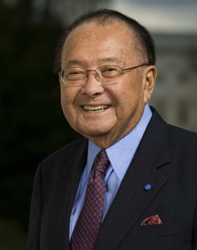

Daniel K. Inouye International Airport (HNL)

Daniel K. Inouye International Airport is Hawaiʻi’s busiest aviation hub and the first point of entry for most travelers arriving in the islands. Its name honors Senator Daniel K. Inouye, one of Hawaiʻi’s most influential political leaders, whose life spanned war, statehood, and the development of modern Hawaiʻi. Though many know the airport by its code, HNL, the story behind its name follows the ebbs and flows of aviation in Hawaiʻi and the life of the man it commemorates.
The airport began as John Rodgers Airport (Terminal 2 still bears his name, and Kalaeloa Airport also used his name with the FAA identifier JRF), established in 1927 and named after a naval aviator who made early attempts at trans-Pacific flight. In its earliest decades, the facility served interisland planes and small military craft, but World War II transformed the site. The US military grounded all civilian aircraft and temporarily renamed the airport as Naval Air Station Honolulu. They built a new control tower and terminal building and as the war progressed, the Navy allowed limited commercial traffic during the day.
After the war, the airport was renamed Honolulu Airport (adding International a few years later). This all coincided with the world entering the Jet Age. As commercial travel boomed, Honolulu emerged as the Pacific’s major refueling point, and the airport grew rapidly to accommodate long-haul aircraft. Terminals expanded, runways lengthened, and the airport evolved into a modern international gateway connecting the mainland United States with East Asia and the Pacific Basin. In the 1950s, HNL briefly became the third-busiest airport in the United States and had the world’s longest runway.
In 2017, the State of Hawaiʻi formally renamed Honolulu International Airport in honor of Senator Daniel K. Inouye (1924–2012), recognizing both his wartime heroism and his decades of political leadership. The decision reflected Inouye’s long-standing influence in federal aviation, defense, and transportation funding—areas that shaped Hawaiʻi’s infrastructure in the 20th and early 21st centuries.
Inouye’s personal story is central to understanding why the airport now bears his name. Born in Honolulu to Japanese immigrant parents, he grew up in the era of territorial Hawaiʻi and came of age during World War II. Inouye volunteered for the 442nd Regimental Combat Team, the highly decorated Japanese American unit that fought in Europe. He lost his right arm in combat and was awarded the Medal of Honor for extraordinary bravery. His military service defined his public life, demonstrating a commitment to both Hawaiʻi and the United States.

He was elected to Congress in 1959, the first year Hawaiʻi had representation due to statehood. Inouye served in the U.S. Senate for nearly fifty years. He became one of the most senior and influential senators, known for his work on appropriations, defense, Native Hawaiian affairs, and the development of Hawaiʻi’s transportation system. Much of the federal funding that modernized Hawaiʻi’s airports, harbors, highways, and military facilities flowed through committees he chaired or were involved with. Naming the airport after him reflected this legacy: a recognition that Hawaiʻi’s modern connectivity, owed much to his political acumen and tenure.
In recent years, his legacy has been revisited with greater scrutiny, including public discussion of a sexual harassment allegation made by a former congressional aide and additional accusations raised by others during and after his Senate career.
Today, Daniel K. Inouye International Airport serves as a major Pacific hub linking Hawaiʻi with North America, Asia, Oceania, and the neighbor islands. Millions of travelers pass through its runways and terminals each year. Many are just trying to clear security and enjoy their vacation without giving a thought to the airport’s history, from the early attempts at trans-oceanic flight, the wartime expansion, the Jet Age boom, and the long political career of a senator who the complex is named after.
